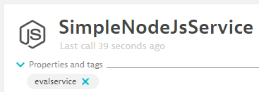

If you have tools that deploy your applications and then run tests against those you have done the hard work already. Keptn's Quality Gates help you to automate the evaluation of your test results and the monitoring data captured during your tests. Keptn does this by embracing the concept of Service Level Indicators (SLIs) and Service Level Objectives (SLOs). Essentially SLIs are metrics such as Response Time, Throughput, Error Rate, Number of Database Calls, Time spent in external service calls, ... and SLOs define which objective you have for these SLIs to consider your service to be adhering to what you expect, e.g: Response Time of Login should be faster than 200ms or Login should not make more than 1 database query.
Keptn didn't come up with these concepts. They have been around for a while and made very popular thanks to the work that Google did around Site Reliability Engineering
In this tutorial we teach you how you can use Keptn Quality Gates to automatically analyze important metrics (SLIs) that Dynatrace captures while your system is under load, e.g: during a load test and compare them against your expected behavior (SLOs). This comparison can either be against well defined thresholds, e.g: 200ms response time but can also be a comparison against previous test results, e.g: response time should not get slower than 10% of our previous build.
The real benefit is visulized in the following animation. Keptn Quality Gates help you automate the manual task of analyzing or comparing data on dashboards to determine whether a build meets your quality criteria.

This tutorial will use a simple node.js based containerized sample application which you will deploy
What you'll learn
- Install Keptn and setup a Keptn Project for Quality Gate evaluation
- Prepare Dynatrace to act as a data source for Quality Gate evaluation
- Learn how to define and use service-level indicators (SLIs) and service-level objectives (SLOs)
- How to trigger a Keptn Quality Gate evaluation using the CLI and the API
- How to use the Keptns Bridge to inspect your Quality Gate Results
We have invested in a new easier way to test and explore Keptn Quality Gates and are in progress of updating this tutorial accordingly.
If you want to give the new Keptn Quality Gates for Dynatrace User in 5 Minutes it a try please continue here. Its a full tutorial that lives on GitHub in the moment. We will move it over to this tutorial page - but - as of today - feel free to simply follow the steps over on the GitHub page.
Once you install Keptn based on the installation instructions you will automatically get a pre-configured quality gate project connected to your Dynatrace Environment which is ready to run quality gates:
This tutorial already uses the new Dynatrace SLO Dashboard capabilities which pull data from a dashboard that looks like this:
To summarize - here is why you should run the GitHub tutorial:
- You only need a Linux machine with 4GB RAM & 1vCPU to setup keptn
- You can explore to the Dynatrace SLO dashboard capability of Keptn
- You can immediately run your quality after the installation completes
If you want to continue with the existing tutorial feel free to do so. Then just continue with the next steps!
Before you can get started, please make sure to have Keptn installed on your Kubernetes cluster.
If not, please follow one of these tutorials to install Keptn on your favourite Kubernetes distribution. You can either do a full Keptn installation or can opt in to only install the execution plane for quality-gates by adding –use-case=quality-gates to keptn install. Both installation options will work for our tutorial.
What you need in order to complete this tutorial is
1: keptn status needs to successfully connect to your keptn instance
2: kubectl needs to be configured to connect to your k8s cluster
3: you have access to the Keptns Bridge. If you have not yet exposed it please do so as described in Expose Keptn's Bridge
This tutorial assumes that you have an application that is already deployed and monitored with Dynatrace. It should also be an application that has some load on it in order for Keptn to pull metrics for the SLI/SLO-based Quality Gate evaluation.
If you do not have an application that is under load follow the next tutorial step. Otherwise you can skip it:
In our tutorial we are not using Keptn for deploying our application. The goal is to show you that Keptn can also be used for Quality Gates or even Performance Evaluation on applications deployed manually or through other deployment automation tools.
We do however need an application that is monitored by Dynatrace in order for Keptn to pull out metrics during the evaluation.
In case you do not have your own application and the tutorial offered you to deploy this simple node.js-based sample application then follow these steps to deploy it and get it monitored by Dynatrace.
Host monitored with Dynatrace
Before we deploy our application lets make sure that your host is monitored with Dynatrace. To accomplish that make sure that you install the Dynatrace OneAgent on your host where you will be deploying our application later on. One option is to standup a virtual machine on your favorite cloud vendor. and either add the installation instructions of the OneAgent to the startup script or execute it once the machine is running. The end goal should be that Dynatrace is monitoring that host:

Another option would be to deploy that application on a Kubernetes cluster. In that case please follow the instructions to deploy the Dynatrace OneAgent on Kubernetes
Deploy the sample app
Now as we have Dynatrace monitor your host we can deploy our container. Here is the example on how to deploy it using docker:
docker run -p 80:8080 grabnerandi/simplenodeservice:1.0.0
This will deploy Build 1.0.0 of the simplenodeservice sample application and exposing it via port 80. If you have your firewalls setup correctly you should be able to navigate to the website as well as shortly after seeing the SimpleNodeJsService show up in Dynatrace:
Put some load on it
Last what we need is some consistent load on the service so that later on when asking Keptn to evaluate SLIs against our SLOs Dynatrace has data for that time period.
The examples repository from Git that you have cloned locally contains two options
1: Running JMeter
If you happen to have JMeter installed you can run the load.jmx script (from examples/simplenodeservice/keptn/jmeter). Before you do please change the SERVER_URL variable to the URL of your hosted version of the simplenode application. Additionally you should also change the ThreadGroups Loop Count setting to forever so that the test keeps running!
2: Run a batch with CURL
Another option is to launch the gen_load.sh file you will find under examples/simplenodeservice/helpers. This script uses curl to execute some simple GET requests. It will run until you either kill the process or until the script finds the file endloadtest.txt (which can be empty).
To validate if load comes through navigate to the service in Dynatrace and validate that you see performance & trace data for your monitored service!
For enabling the Keptn Quality Gates and for production monitoring, we are going to use Dynatrace as the data provider. Therefore, we are going to setup Dynatrace in our Kubernetes cluster to have our sample application monitored and we can use the monitoring data for both the basis for evaluating quality gates as well as a trigger to start self-healing.
If you don't have a Dynatrace tenant yet, sign up for a free trial or a developer account.
- Create a Dynatrace API TokenLog in to your Dynatrace tenant and go to Settings > Integration > Dynatrace API. Then, create a new API token with the following permissions:
- Access problem and event feed, metrics, and topology
- Read log content
- Read configuration
- Write configuration
- Capture request data
- Read metrics
- Ingest metrics
- Read entities

- Create a Dynatrace PaaS TokenIn your Dynatrace tenant, go to Settings > Integration > Platform as a Service, and create a new PaaS Token.
- Store your credentials in a Kubernetes secret by executing the following command. The
DT_TENANThas to be set according to the appropriate pattern:- Dynatrace SaaS tenant (this format is most likely for you):
{your-environment-id}.live.dynatrace.com - Dynatrace-managed tenant:
{your-domain}/e/{your-environment-id}
kubectlcommand itself.
If you used the variables, the next command can be copied and pasted without modifications. If you have not set the variables, please make sure to set the right values in the next command.export DT_TENANT=yourtenant.live.dynatrace.com export DT_API_TOKEN=yourAPItoken export DT_PAAS_TOKEN=yourPAAStokenkubectl -n keptn create secret generic dynatrace --from-literal="DT_TENANT=$DT_TENANT" --from-literal="DT_API_TOKEN=$DT_API_TOKEN" --from-literal="DT_PAAS_TOKEN=$DT_PAAS_TOKEN" --from-literal="KEPTN_API_URL=http://$(kubectl -n keptn get ingress api-keptn-ingress -ojsonpath='{.spec.rules[0].host}')/api" --from-literal="KEPTN_API_TOKEN=$(kubectl get secret keptn-api-token -n keptn -ojsonpath='{.data.keptn-api-token}' | base64 --decode)" --from-literal="KEPTN_BRIDGE_URL=http://$(kubectl -n keptn get ingress api-keptn-ingress -ojsonpath='{.spec.rules[0].host}')/bridge" - Dynatrace SaaS tenant (this format is most likely for you):
To make the tutorial experience as smooth as possible, we are providing an automation script to setup the Dynatrace OneAgent operator in your Kubernetes cluster. For details on the installation, we refer to the official Dynatrace documentation. You can download and run the script using the following instructions.
- Downloading the automation file.
curl -o deploy-dynatrace-oneagent.sh https://raw.githubusercontent.com/keptn/examples/release-0.7.0/dynatrace-oneagent/deploy-dynatrace-oneagent.sh - Making the file executable using the
chmodcommand.chmod +x deploy-dynatrace-oneagent.sh - Executing the script to automatically deploys the Dynatrace OneAgent Operator.
./deploy-dynatrace-oneagent.sh - Optional: Verify if all pods in the Dynatrace namespace are running. It might take up to 1-2 minutes for all pods to be up and running.
kubectl get pods -n dynatracedynatrace-oneagent-operator-696fd89b76-n9d9n 1/1 Running 0 6m26s dynatrace-oneagent-webhook-78b6d99c85-h9759 2/2 Running 0 6m25s oneagent-g9m42 1/1 Running 0 69s
- The Dynatrace integration into Keptn is handled by the dynatrace-service. To install the dynatrace-service, execute:
kubectl apply -f https://raw.githubusercontent.com/keptn-contrib/dynatrace-service/release-0.10.0/deploy/service.yaml -n keptn - When the service is deployed, use the following command to install Dynatrace on your cluster. If Dynatrace is already deployed, the current deployment of Dynatrace will not be modified.
Output should be similar to this:keptn configure monitoring dynatraceID of Keptn context: 79f19c36-b718-4bb6-88d5-cb79f163289b Configuring Dynatrace monitoring Dynatrace OneAgent Operator is installed on cluster Setting up auto-tagging rules in Dynatrace Tenant Tagging rule keptn_service already exists Tagging rule keptn_stage already exists Tagging rule keptn_project already exists Tagging rule keptn_deployment already exists Setting up problem notifications in Dynatrace Tenant Checking Keptn alerting profile availability Keptn alerting profile available Dynatrace Monitoring setup done
Verify Dynatrace configuration
Since Keptn has configured your Dynatrace tenant, let us take a look what has be done for you:
- Tagging rules: When you navigate to Settings > Tags > Automatically applied tags in your Dynatrace tenant, you will find following tagging rules:
- keptn_deployment
- keptn_project
- keptn_service
- keptn_stage
- Problem notification: A problem notification has been set up to inform Keptn of any problems with your services to allow auto-remediation. You can check the problem notification by navigating to Settings > Integration > Problem notifications and you will find a keptn remediation problem notification.
- Alerting profile: An alerting profile with all problems set to 0 minutes (immediate) is created. You can review this profile by navigating to Settings > Alerting > Alerting profiles.
- Dashboard and Mangement zone: When creating a new Keptn project or executing the keptn configure monitoring command for a particular project (see Note 1), a dashboard and management zone will be generated reflecting the environment as specified in the shipyard file.
Follow the next steps only if your Dynatrace OneAgent does not work properly.
- To check if the OneAgent does not work properly, the output of
kubectl get pods -n dynatracemight look as follows:NAME READY STATUS RESTARTS AGE dynatrace-oneagent-operator-7f477bf78d-dgwb6 1/1 Running 0 8m21s oneagent-b22m4 0/1 Error 6 8m15s oneagent-k7jn6 0/1 CrashLoopBackOff 6 8m15s - This means that after the initial setup you need to edit the OneAgent custom resource in the Dynatrace namespace and add the following entry to the env section:
env: - name: ONEAGENT_ENABLE_VOLUME_STORAGE value: "true" - To edit the OneAgent custom resource:
kubectl edit oneagent -n dynatrace
At the end of your installation, please verify that all Dynatrace resources are in a Ready and Running status by executing kubectl get pods -n dynatrace:
NAME READY STATUS RESTARTS AGE
dynatrace-oneagent-operator-7f477bf78d-dgwb6 1/1 Running 0 8m21s
oneagent-b22m4 1/1 Running 0 8m21s
oneagent-k7jn6 1/1 Running 0 8m21s
A project in Keptn is the logical unit that can hold multiple (micro)services. Therefore, it is the starting point for each Keptn installation.
To get all files you need for this tutorial, please clone the example repo to your local machine.
git clone --branch release-0.7.0 https://github.com/keptn/examples.git --single-branch
cd examples/simplenodeservicequality-gate-only
For this quality gate focused tutorial we will create a new Keptn project using keptn create project to create a project called qgproject using the shipyard_qualitystageonly.yaml as a shipyard definition.
Before executing the following command, make sure you are in the examples/simplenodeservicequality-gate-only folder.
Please note that defining a Git upstream is recommended, but in case that is not wanted the parameters git-user, git-token and git-remote-url can be omitted.
keptn create project qgproject --shipyard=./shipyard_qualitystageonly.yaml --git-user=GIT_USER --git-token=GIT_TOKEN --git-remote-url=GIT_REMOTE_URL
For our purpose we create a simple project with a single stage called qualitystage as we only use Keptn for quality gate evaluations instead of using Keptn for multi-stage delivery pipelines. The content of this shipyard file is rather simple:
stages:
- name: "qualitystage"
Later - as we onboard services - we will be able to use this qualitystage to let Keptn evaluate our SLI/SLO based quality gates!
After creating a Keptn project, services can be added. If we want to use Keptn for Progressive Delivery where Keptn deploys our service using Helm we can use keptn onboard service. In the case where Keptn doesn't do the deployment but is used for Quality Gate or Performance Evaluation we use the command keptn create service:
keptn create service evalservice --project=qgproject
This command just created a service we call evalservice and we added it to our qgproject
We can validate that this service was added by opening up Keptn's bridge and navigate to the qgproject.
During the evaluation of a quality gate, the Dynatrace SLI provider is required that is implemented by an internal Keptn service, the dynatrace-sli-service. This service will fetch the values for the SLIs that are referenced in an SLO configuration.
kubectl apply -f https://raw.githubusercontent.com/keptn-contrib/dynatrace-sli-service/release-0.7.1/deploy/service.yaml -n keptn
Configure the already onboarded project with the new SLI provider:
keptn configure monitoring dynatrace --project=qgproject
Whether you are using our sample application or your own application, in order for the quality gate evaluation to work we need to properly tag the service. This is important as SLI (Service Level Indicators) will be queried from Dynatrace only from entities that match a certain tag. In our case it will add a tag that matches the name of of the Keptn Service which is evalservice. In Dynatrace there are multiple options to put a tag on a service:
- Manual Tagging: put them on service and the process group via the UI or the Dynatrace API
- Automated Tagging: define a rule that tag entities based on existing meta data
- Cloud & Platform Tags: extract tags & annotations from k8s, OpenShift or Cloud Foundry
- Environment Tags: specify tags via the DT_TAGS environment variable
In our example we simply go the manual tagging route which means we simply add a tag called evalservice to the deployed service via the Dynatrace UI like shown below:

Keptn Quality Gates are based on the concepts of
- SLIs (Service Level Indicators): what metrics (=indicators) are important and how do we query them
- SLOs (Service Level Objectives): what conditions (=objectives) must be met to consider this a good or a bad value per indicator
In Keptn we therefore need to provide an sli.yaml that defines how to query certain metrics from a specific tool, e.g: Dynatrace. We also need to provide an slo.yaml that defines the conditions - this file is tool independant.
To learn more about the sli.yaml and slo.yaml files, go to Specifications for Site Reliability Engineering with Keptn.
Our example comes with a basic and an extended set of SLIs and SLOs. In this step we focus on the basic version.
We have to upload two files using the add-resource command.
Ensure you navigate to the examples/simplenodeservice/quality-gate-only folder.
- First, lets upload our
dynatrace/sli_basic.yamlasdynatrace/sli.yaml!keptn add-resource --project=qgproject --stage=qualitystage --service=evalservice --resource=dynatrace/sli_basic.yaml --resourceUri=dynatrace/sli.yaml
This Dynatrace specific SLI contains the definition of 5 indicators. Each indicator has a logical name, e.g: throughput and the tool specific query, e.g: Dynatrace Metrics Query. You can also see that the query definition can leverage placeholders such as $SERVICE (there are more of course). In our case - because we keep it really simply we only use the $SERVICE placeholder telling Keptn to only query data from those SERVICE entities that have a tag applied with the name of our Keptn Service. This will be evalservice:
---
spec_version: '1.0'
indicators:
throughput_svc: "metricSelector=builtin:service.requestCount.total:merge(0):sum&entitySelector=tag($SERVICE),type(SERVICE)"
error_rate_svc: "metricSelector=builtin:service.errors.total.rate:merge(0):avg&entitySelector=tag($SERVICE),type(SERVICE)"
rt_svc_p50: "metricSelector=builtin:service.response.time:merge(0):percentile(50)&entitySelector=tag($SERVICE),type(SERVICE)"
rt_svc_p90: "metricSelector=builtin:service.response.time:merge(0):percentile(90)&entitySelector=tag($SERVICE),type(SERVICE)"
rt_svc_p95: "metricSelector=builtin:service.response.time:merge(0):percentile(95)&entitySelector=tag($SERVICE),type(SERVICE)"
- Second, lets upload our
slo_basic.yamlasslo.yamlkeptn add-resource --project=qgproject --stage=qualitystage --service=evalservice --resource=slo_basic.yaml --resourceUri=slo.yaml
This slo.yaml defines the objectives and references the SLIs defined in the sli.yaml:
---
spec_version: '0.1.0'
comparison:
compare_with: "single_result"
include_result_with_score: "pass"
aggregate_function: avg
objectives:
- sli: response_time_p95
pass: # pass if (relative change <= 10% AND absolute value is < 500)
- criteria:
- "<=+10%" # relative values require a prefixed sign (plus or minus)
- "<600" # absolute values only require a logical operator
warning: # if the response time is below 800ms, the result should be a warning
- criteria:
- "<=800"
- sli: throughput
pass:
- criteria:
- ">4000"
- sli: error_rate
weight: 2
pass:
- criteria:
- "<=1%"
warning:
- criteria:
- "<=2%"
- sli: response_time_p50
- sli: response_time_p90
pass:
- criteria:
- "<=+10%"
warning:
- criteria:
- "<=+10%"
total_score:
pass: "90%"
warning: "75%"
Keptn not only provides an integration with Dynatrace to pull SLIs. It also provides an integration where Keptn can push events to Dynatrace, e.g: when a Quality Gate was evaluated it can send that information to a specific set of Dynatrace entities by leveraging the Dynatrace Events API.
By default the Dynatrace Keptn Service assumes that monitored services in Dynatrace are deployed by Keptn and therefore tagged with 4 specific tags: keptn_project, keptn_service, keptn_stage & keptn_deployment. In a scenario where Keptn doesnt manage the deployment we cannot assume these tags are there. This is why we have to tell the Dynatrace Keptn Service to which entities the events should be sent to. This configuration can be provided by uploading a dynatrace.conf.yaml which includes the actual tag rules. In our case its very simply. First the command to upload the dynatrace.conf.yaml:
keptn add-resource --project=qgproject --stage=qualitystage --service=evalservice --resource=dynatrace/dynatrace.conf.yaml --resourceUri=dynatrace/dynatrace.conf.yaml
And here is the content that is in there - showing you that you can use the Keptn to Dynatrace integration to let Keptn send events to any type of monitored service - not only those that are deployed by Keptn:
---
spec_version: '0.1.0'
dtCreds: dynatrace
attachRules:
tagRule:
- meTypes:
- SERVICE
tags:
- context: CONTEXTLESS
key: $SERVICE
We should now have everything in place to let Keptn evaluate our quality gate. The only thing we need to do is ask Keptn to start an evaluation for our service and give it a timeframe. The easiest way to do this is by using the Keptn CLI using the command keptn send event start-evaluation
- Start the evaluation via the CLI
The following is an example to have Keptn evaluate the last 10 minutes by also adding some labels which will later show up in the Keptns Bridge!
keptn send event start-evaluation --project=qgproject --stage=qualitystage --service=evalservice --timeframe=10m --labels=gaterun=1,type=viacli
Please explore all other options in the Keptn CLI Documentation for keptn send event start-evaluation. You can also specify start and end timestamps or also combine start timestamp with a timeframe.
What will come back as an output is the Keptn Context. Something like:
ID of Keptn context: f628eb68-849c-4e77-ab69-a504af34a081
- Query status of the evaluation via the CLI
As the evaluation is an asynchronous process it may take a while until the results are available. We can use that Keptn Context with a call keptn get event evaluation-done to query the status of our request by asking Keptn whether the event evaluation-done is already available for a specific Keptn context.
keptn get event evaluation-done --keptn-context=f628eb68-849c-4e77-ab69-a504af34a081
While Keptn is still evaluation you will get a message that querying evaluation-done was not yet successful. Once the evalution is complete you will however receive the full evaluation result like this:
{"contenttype":"application/json","data":{"deploymentstrategy":"","evaluationdetails":{"indicatorResults":[{"score":0,"status":"fail","targets":[{"criteria":"\u003c=800","targetValue":800,"violated":true},{"criteria":"\u003c=+10%","targetValue":0,"violated":false},{"criteria":"\u003c600","targetValue":600,"violated":true}],"value":{"metric":"rt_svc_p95","success":true,"value":1153.0662}},{"score":0,"status":"fail","targets":[{"criteria":"\u003e20000","targetValue":20000,"violated":true}],"value":{"metric":"throughput_svc","success":true,"value":189}},{"score":2,"status":"pass","targets":[{"criteria":"\u003c=1%","targetValue":1,"violated":false}],"value":{"metric":"error_rate_svc","success":true,"value":0}},{"score":0,"status":"info","targets":null,"value":{"metric":"rt_svc_p50","success":true,"value":0.404}},{"score":0,"status":"fail","targets":[{"criteria":"\u003c=+10%","targetValue":0.7960919999999999,"violated":true},{"criteria":"\u003c=+10%","targetValue":0.7960919999999999,"violated":true}],"value":{"metric":"rt_svc_p90","success":true,"value":111.49150000000942}}],"result":"fail","score":40,"sloFileContent":"Y29tcGFyaXNvbjoKICBhZ2dyZWdhdGVfZnVuY3Rpb246IGF2ZwogIGNvbXBhcmVfd2l0aDogc2luZ2xlX3Jlc3VsdAogIGluY2x1ZGVfcmVzdWx0X3dpdGhfc2NvcmU6IHBhc3MKICBudW1iZXJfb2ZfY29tcGFyaXNvbl9yZXN1bHRzOiAzCmZpbHRlcjogbnVsbApvYmplY3RpdmVzOgotIGtleV9zbGk6IGZhbHNlCiAgcGFzczoKICAtIGNyaXRlcmlhOgogICAgLSA8PSsxMCUKICAgIC0gPDYwMAogIHNsaTogcnRfc3ZjX3A5NQogIHdhcm5pbmc6CiAgLSBjcml0ZXJpYToKICAgIC0gPD04MDAKICB3ZWlnaHQ6IDEKLSBrZXlfc2xpOiBmYWxzZQogIHBhc3M6CiAgLSBjcml0ZXJpYToKICAgIC0gJz4yMDAwMCcKICBzbGk6IHRocm91Z2hwdXRfc3ZjCiAgd2FybmluZzogbnVsbAogIHdlaWdodDogMQotIGtleV9zbGk6IGZhbHNlCiAgcGFzczoKICAtIGNyaXRlcmlhOgogICAgLSA8PTElCiAgc2xpOiBlcnJvcl9yYXRlX3N2YwogIHdhcm5pbmc6CiAgLSBjcml0ZXJpYToKICAgIC0gPD0yJQogIHdlaWdodDogMgotIGtleV9zbGk6IGZhbHNlCiAgcGFzczogbnVsbAogIHNsaTogcnRfc3ZjX3A1MAogIHdhcm5pbmc6IG51bGwKICB3ZWlnaHQ6IDEKLSBrZXlfc2xpOiBmYWxzZQogIHBhc3M6CiAgLSBjcml0ZXJpYToKICAgIC0gPD0rMTAlCiAgc2xpOiBydF9zdmNfcDkwCiAgd2FybmluZzoKICAtIGNyaXRlcmlhOgogICAgLSA8PSsxMCUKICB3ZWlnaHQ6IDEKc3BlY192ZXJzaW9uOiAwLjEuMAp0b3RhbF9zY29yZToKICBwYXNzOiA5MCUKICB3YXJuaW5nOiA3NSUK","timeEnd":"2020-05-25T16:17:28.529Z","timeStart":"2020-05-25T16:07:28.529Z"},"labels":{"gaterun":"1","type":"viacli"},"project":"qgproject","result":"fail","service":"evalservice","stage":"qualitystage","teststrategy":"manual"},"id":"fa8f0c4b-4de7-4a0f-870f-175fdbcd6d33","source":"lighthouse-service","specversion":"0.2","time":"2020-05-25T16:19:29.349Z","type":"sh.keptn.events.evaluation-done","shkeptncontext":"f628eb68-849c-4e77-ab69-a504af34a081"}
- Lets validate quality gate in bridge
If everything works as expected we should be able to see the result in the Keptn's bridge

- Lets evaluate the event in Dynatrace
Thanks to the Dynatrace integration that also pushes events to Dynatrace we should also see Quality Gate result in Dynatrace when navigating to our sevice.

After we have executed the Quality Gate Evaluation through the CLI lets do the same through the Keptn API.
If you read through the Keptn API documentation you learn we have to get the API Endpoint and the Token first!
- Get API Endpoint
Keptn status gives us the endpoint:
$ keptn status
Starting to authenticate
Successfully authenticated
Using a file-based storage for the key because the password-store seems to be not set up.
CLI is authenticated against the Keptn cluster https://YOURKEPTNDOMAIN/api
- Retrieving API Token
In order to retrieve the API token we need access to kubectl. There is an easy and convenient way described in the Keptn CLI Authentication documentation to actually retrieve and store both the API Endpoint and API Token in a variable. This helps us later on to automate API calls as well. So - lets do it!
KEPTN_ENDPOINT=https://YOURKEPTNDOMAIN/api
KEPTN_API_TOKEN=$(kubectl get secret keptn-api-token -n keptn -ojsonpath={.data.keptn-api-token} | base64 --decode)
- Explore the Keptn API via Swagger UI
If you want to make yourself familiar with all options of the API you can browse to your api endpoint and explore the Swagger UI by adding /swagger-ui to the API Endpoint, e.g: https://YOURKEPTNDOMAIN/api/swagger-ui
- Send a start-evaluation event
The easiest way to make API calls is through the Swagger UI. In order to use it we first need to authorize the Swagger UI by giving it our API token. To get the actual value do:
echo $KEPTN_API_TOKEN
Copy that value, navigate to your Swagger UI in your browser, make sure you have selected the api-service and then click Authorize. Now paste in your token and login!
Now we are ready to send a start-evaluation event just as we did before through the CLI. The only difference is that the API expects a start & time timestamp and doesnt provide the convenient option of a timeframe. Thats why you have to make sure to put in timestamps where you know you have data in your Dynatrace environment. Here is my prepared POST body including the JSON object for start-evaluation:
{
"type": "sh.keptn.event.start-evaluation",
"source": "https://github.com/keptn/keptn",
"data": {
"start": "2020-05-27T07:00:00.000Z",
"end": "2020-05-27T07:05:00.000Z",
"project": "qgproject",
"stage": "qualitystage",
"service": "evalservice",
"teststrategy": "manual"
}
}
Please take attention that the above CloudEvent contains the property "teststrategy": "manual". This is required to tell Keptn that we didn't use Keptn to execute any tests prior to the evaluation but that we just want to do a manual evaluation.
In the Swagger UI scroll to the POST /event API call. Click on Try, then post the JSON body into the edit field like shown here:
The great thing about Swagger UI is that it will not only execute the request and give you the response. It will also give you the corresponding CURL command so you can easily integrate this API call into your automation scripts. The following shows the output including the response which includes the keptnContext ID of our triggered evaluation:
For your reference - here is the CURL command for easy copy/paste in case you want to execute this from your command line:
curl -X POST "$KEPTN_ENDPOINT/v1/event" -H "accept: application/json" -H "x-token: $KEPTN_API_TOKEN" -H "Content-Type: application/json" -d "{ \"type\": \"sh.keptn.event.start-evaluation\", \"source\": \"https://github.com/keptn/keptn\", \"data\": { \"start\": \"2020-05-27T07:00:00.000Z\", \"end\": \"2020-05-27T07:05:00.000Z\", \"project\": \"qgproject\", \"stage\": \"qualitystage\", \"service\": \"evalservice\", \"teststrategy\": \"manual\" }}"
- Query for evaluation-done
Remember from when we ran through this excercise with the Keptn CLI? The evaluation may take up to a minute. In order to check whether the evaluation is done and what the result was we can now call the GET /events API endpoint and query the existence of an sh.keptn.events.evaluation-done event for the keptnContext we retrieved earlier:
You can execute this through the Swagger UI or - as it is rather simple and straight forward - using the following CURL:
curl -X GET "$KEPTN_ENDPOINT/v1/event?keptnContext=KEPTN_CONTEXT_ID&type=sh.keptn.events.evaluation-done" -k -H "accept: application/json" -H "x-token: $KEPTN_API_TOKEN"
The result comes in the form of the evaluation-done event, which is specified here.
Here the screenshot of the response in Swagger UI:
- Evaluate in Bridge & Dynatrace
Just as we did before you can also validate the data in the Keptn's Bridge as well as in Dynatrace!
In this tutorial, you have learned how to use Keptn to validate the quality of your deployments by evaluating a set of SLIs (Service Level Indicators) against your SLOs (Service Level Objectives) for a specified timeframe! The overall goal is to use this capability to automate the manual evaluation of metrics through dashboards.
As you have now learned how to setup Keptn for pulling metrics out of Dynatrace the next step is that you do this with metrics that are important for your services, applications, processes and hosts. Think about how you can convert your Dynatrace dashboards into SLIs and SLOs and then have Keptn automate the analysis for you:
What we've covered
- Install Keptn and setup a Keptn Project for Quality Gate evaluation
- Prepare Dynatrace to act as a data source for Quality Gate evaluation
- Learn how to define and use service-level indicators (SLIs) and service-level objectives (SLOs)
- How to trigger a Keptn Quality Gate evaluation using the CLI and the API
- How to use the Keptns Bridge to inspect your Quality Gate Results
Please visit us in our Keptn Slack and tell us how you like Keptn and this tutorial! We are happy to hear your thoughts & suggestions!
Also, make sure to follow us on Twitter to get the latest news on Keptn, our tutorials and newest releases!